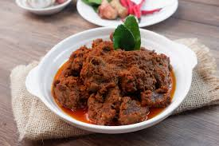

Rendang

Description
Rendang is a rich and aromatic Indonesian slow-cooked meat dish, traditionally made with beef simmered in a flavorful blend of coconut milk and a fragrant spice paste. Originating from the Minangkabau people of West Sumatra, this iconic dish combines ingredients like lemongrass, galangal, turmeric, garlic, shallots, and chili to create a deep, spicy, and savory flavor profile. The cooking process involves hours of simmering until the liquid evaporates and the meat becomes tender, caramelized, and coated in a thick, intense sauce. Often served during special occasions and ceremonies, rendang is a symbol of patience and culinary artistry, offering a bold and unforgettable taste of Indonesia's diverse heritage.
Ingredients
- 1 kg beef (or buffalo meat, traditionally), cut into chunks
- 1 liter coconut milk (from 2–3 coconuts or store-bought)
- 2 stalks lemongrass, bruised and tied into knots
- 4–5 kaffir lime leaves, torn slightly to release aroma
- 2–3 turmeric leaves (optional, but adds authenticity)
- 2–3 tablespoons kerisik (toasted grated coconut, optional for richness)
- 3–4 tablespoons cooking oil (for frying spices)
-
Spice Paste:
- 6–8 dried red chilies (soaked in hot water to soften)
- 6 shallots, peeled
- 4 garlic cloves, peeled
- 3 cm ginger, peeled
- 3 cm galangal, peeled
- 3 cm turmeric, peeled (or 1 tsp turmeric powder)
- 4 candlenuts (or macadamia nuts as a substitute)
- 1 teaspoon shrimp paste (optional, but traditional)
- Salt to taste
-
Garnish/Serving:
- Fried shallots (optional, for garnish)
- Steamed rice (to serve alongside)